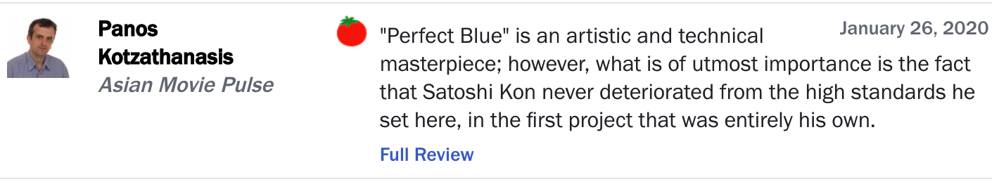
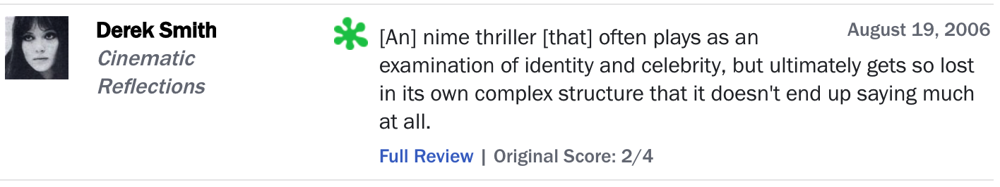

Advice for this homework:
-
Words are simply strings separated by whitespace. Note that words which
only differ in capitalization are considered separate (e.g.
great and Great are considered different words).
-
You might find some useful functions in
util.py. Have a look
around in there before you start coding.
We've created a LaTeX template here for you to use that contains the prompts for each question.
Problem 1: Building intuition
Here are two reviews of Perfect Blue, from
Rotten Tomatoes:


Rotten Tomatoes has classified these reviews as "positive" and "negative,"
respectively, as indicated by the intact tomato on the top and the
splatter on the bottom. In this assignment, you will create a simple
text classification system that can perform this task automatically. We'll warm up with the following set of four mini-reviews, each labeled
positive $(+1)$ or negative $(-1)$:
- $(-1)$ not good
- $(-1)$ pretty bad
- $(+1)$ good plot
- $(+1)$ pretty scenery
Each review $x$ is mapped onto a feature vector $\phi(x)$, which maps each
word to the number of occurrences of that word in the review. For example,
the second review maps to the (sparse) feature vector $\phi(x) =
\{\text{pretty}:1, \text{bad}:1\}$. Recall the definition of the hinge loss:
$$\text{Loss}_{\text{hinge}}(x, y, \mathbf{w}) = \max \{0, 1 - \mathbf{w}
\cdot \phi(x) y\},$$ where $x$ is the review text, $y$ is the correct label,
$\mathbf{w}$ is the weight vector.
-
Suppose we run stochastic gradient descent once for each of the 4 samples
in the order given above, updating the weights according to $$\mathbf{w}
\leftarrow \mathbf{w} - \eta \nabla_\mathbf{w}
\text{Loss}_{\text{hinge}}(x, y, \mathbf{w}).$$ After the updates, what
are the weights of the six words ("pretty", "good", "bad", "plot", "not",
"scenery") that appear in the above reviews?
- Use $\eta = 0.1$ as the step size.
- Initialize $\mathbf{w} = [0, 0,0,0,0, 0]$.
-
The gradient $\nabla_\mathbf{w} \text{Loss}_{\text{hinge}}(x, y,
\mathbf{w}) = 0$ when margin is exactly 1.
A weight vector that contains a numerical value for each of the tokens
in the reviews ("pretty", "good", "bad","plot", "not", "scenery"),
in this order. For example: $[0.1, 0.2,0.3,0.4,0.5, 0.6]$.
-
Given the following dataset of reviews:
- ($-1$) bad
- ($+1$) good
- ($+1$) not bad
- ($-1$) not good
Prove that no linear classifier using word features (i.e. word count - it maps each word to the number of occurrences of that word in the review) can get zero error on
this dataset. Remember that this is a question about classifiers, not
optimization algorithms; your proof should be true for any linear
classifier of the form $f_{\mathbf{w}}(x) = \text{sign}(\mathbf{w} \cdot \phi(x))$, regardless of how the weights are learned.
Propose a single additional feature for your dataset that we could augment
the feature vector with that would fix this problem.
- a short written proof (~3-5 sentences).
-
a viable feature that would allow a linear classifier to have zero
error on the dataset.
Problem 2: Predicting Movie Ratings
Suppose that we are now interested in predicting a numeric rating for
movie reviews. We will use a non-linear predictor that takes a movie
review $x$ and returns $\sigma(\mathbf w \cdot \phi(x))$, where $\sigma(z)
= (1 + e^{-z})^{-1}$ is the logistic function that squashes a real number
to the range $(0, 1)$. For this problem, assume that the movie rating $y$
is a real-valued variable in the range $[0, 1]$.
Do not use math software such as Wolfram Alpha to solve this
problem.
-
Suppose that we wish to use
squared loss. Write out the expression for $\text{Loss}(x, y,
\mathbf w)$ for a single datapoint $(x,y)$.
A mathematical expression for the loss. Feel free to use $\sigma$ in the
expression.
-
Given $\text{Loss}(x, y, \mathbf w)$ from the previous part, compute the
gradient of the loss with respect to $\mathbf w$, $\nabla_{\mathbf{w}} \text{Loss}(x, y,
\mathbf w)$. Write the answer in terms of the predicted value $p =
\sigma(\mathbf w \cdot \phi(x))$.
A mathematical expression for the gradient of the loss.
-
Suppose there is one datapoint $(x, y)$ with some arbitrary $\phi(x)$ and
$y = 1$. Specify conditions for $\mathbf w$ to make the magnitude of the
gradient of the loss with respect to $\mathbf w$ arbitrarily small (i.e.
minimize the magnitude of the gradient). Can the magnitude of the gradient
with respect to $\mathbf w$ ever be exactly zero? You are allowed to make
the magnitude of $\mathbf w$ arbitrarily large but not infinity.
Hint: try to understand intuitively what is going on and what each part
of the expression contributes. If you find yourself doing too much
algebra, you're probably doing something suboptimal.
Motivation: the reason why we're interested in the magnitude of the
gradients is because it governs how far gradient descent will step. For
example, if the gradient is close to zero when $\mathbf w$ is very far
from the optimum, then it could take a long time for gradient descent to
reach the optimum (if at all). This is known as the
vanishing gradient problem when training neural networks.
1-2 sentences describing the conditions for $\mathbf w$ to minimize the
magnitude of the gradient, 1-2 sentences explaining whether the gradient
can be exactly zero.
Problem 3: Sentiment Classification
In this problem, we will build a binary linear classifier that reads movie
reviews and guesses whether they are "positive" or "negative."
Do not import any outside libraries (e.g. numpy) for any of the coding
parts.
Only standard python libraries and/or the libraries imported in the starter
code are allowed. In this problem, you must implement the functions without
using libraries like Scikit-learn.
Hint: look at the provided `util.py` for some helpful utility functions that
you are able to use when implementing your code. Throughout this problem,
avoid modifying Python dictionaries directly; instead, use the provided utility
methods `dotProduct` and `increment`.
-
Implement the function
extractWordFeatures, which takes a
review (string) as input and returns a feature vector $\phi(x)$, which is
represented as a dict in Python.
-
Implement the function
learnPredictor using stochastic
gradient descent and minimize hinge loss. Print the training error and
validation error after each epoch to make sure your code is working. You
must get less than 4% error rate on the training set and less than 30%
error rate on the validation set to get full credit.
-
Write the
generateExample function (nested in the
generateDataset function) to generate artificial data
samples.
Use this to double check that your
learnPredictor works! You can do this by using
generateDataset() to generate training and validation
examples. You can then pass in these examples as
trainExamples and
validationExamples respectively to
learnPredictor with the identity function
lambda x: x as a featureExtractor.
-
Some languages are written without spaces between words, so is splitting
the words really necessary or can we just naively consider strings of
characters that stretch across words? Implement the function
extractCharacterFeatures (by filling in the
extract function), which maps each string of $n$ characters
to the number of times it occurs, ignoring whitespace (spaces and tabs).
-
Run your linear predictor with feature extractor
extractCharacterFeatures. Experiment with different values of
$n$ to see which one produces the smallest validation error. You should
observe that this error is nearly as small as that produced by word
features. Why is this the case?
Construct a review (one sentence max) in which character $n$-grams
probably outperform word features, and briefly explain why this is so.
Note:
There is a function in submission.py that will allow you
add a test to grader.py to test different values of $n$.
Remember to write your final written solution in sentiment.pdf.
-
a short paragraph (~4-6 sentences). In the paragraph state which
value of $n$ produces the smallest validation error, why this is
likely the value that produces the smallest error.
-
a one-sentence review and explanation for when character $n$-grams
probably outperform word features.
Problem 4: Toxicity Classification and Maximum Group Loss
Recall that models trained (in the standard way) to minimize the average loss can work well on average but poorly on certain groups. One way to mitigate this issue is by minimizing the maximum group loss instead. In this problem, we will compare the average loss and maximum group loss objectives on a toy setting inspired by a problem with real-world toxicity classification models.
Toxicity classifiers are designed to assist in moderating online forums by predicting whether an online comment is toxic or not, so that comments predicted to be toxic can be flagged for humans to review [1].
Unfortunately, some models have been shown to misclassify non-toxic comments mentioning demographic identities (e.g., “I am a [demographic identity]”) as toxic [2]. This behavior could arise if we assume that toxic comments in the dataset often mention demographic identities, and as a result, models learn to spuriously correlate toxicity with the mention of these identities.
In this problem, we will study a toy setting that illustrates the spurious correlation problem:
The input $x$ is a comment (a string) made on an online forum;
the label $y \in \{-1,1\}$ is the toxicity of the comment ($y = 1$ is toxic, $y=-1$ is non-toxic);
$d \in \{0,1\}$ indicates if the text contains a word that refers to a demographic identity;
and $t \in \{0,1\}$ indicates whether the comment includes certain “toxic” words.
The comment $x$ is mapped onto the feature vector $\phi(x) = [1, d, t]$ where 1 is the bias term (the bias term is present to prevent the edge case $ \mathbf{w} \cdot \phi(x) = 0$ in the questions that follow).
To make this concrete, we provide a few simple examples below, where we underline toxic words and words that refer to a demographic identity:
|
Comment ($x$)
|
Toxicity ($y$)
|
Presence of demographic mentions ($d$)
|
Presence of toxic words ($t$)
|
|
“Stanford sucks!”
|
1
|
0
|
1
|
|
“I’m a woman in computer science!”
|
-1
|
1
|
0
|
|
“The hummingbird sucks nectar from the flower”
|
-1
|
0
|
1
|
Suppose we are given the following training data,
where we list the number of times each combination $(y, d, t)$ shows up in the training set.
|
$y$
|
$d$
|
$t$
|
# data points
|
|
-1
|
0
|
0
|
63
|
|
-1
|
0
|
1
|
27
|
|
-1
|
1
|
0
|
7
|
|
-1
|
1
|
1
|
3
|
|
1
|
0
|
0
|
3
|
|
1
|
0
|
1
|
7
|
|
1
|
1
|
0
|
27
|
|
1
|
1
|
1
|
63
|
| 200
|
From the above table, we can see that 70 out of the 100 of toxic comments include toxic words, and 70 out of the 100 non-toxic comments do not. In addition, the toxicity of the comment $y$ is highly correlated with mentions of demographic identities $d$ (again under the assumption that toxic comments target demographic identities) — 90 out of the 100 toxic comments include mentions of demographic identities, and 90 out of the 100 non-toxic comments do not.
We will consider linear classifiers of the form $f_{\mathbf{w}}(x) = \text{sign}(\mathbf{w} \cdot \phi(x))$, where $\phi(x)$ is defined above.
Normally, we would train classifiers to minimize either the average loss or the maximum group loss,
but for simplicity, we will compare two fixed classifiers (which might not minimize either objective):
- Classifier D: $\mathbf{w} = [-0.1, 1, 0]$
- Classifier T: $\mathbf{w} = [-0.1, 0, 1]$
For our loss function, we will be using the zero-one loss, so that the per-group loss is
$$\text{TrainLoss}_g(\mathbf{w}) = \frac{1}{|\text{D}_\text{train}(g)|}{\sum_{(x,y)\in\text{D}_\text{train}(g)}}\mathbf{1}[f_\mathbf{w}(x)\neq y].$$
Recall the definition of the maximum group loss:
$$\text{TrainLoss}_\text{max}(\mathbf{w}) = \max_{g} \text{TrainLoss}_g(\mathbf{w}).$$
To capture the spurious correlation problem,
let us define groups based on the value of $(y, d)$.
There are thus four groups: $(y=1, d=1), (y=1, d=0), (y=-1, d=1)$, and $(y=-1, d=0)$.
For example, the group $(y=-1, d=1)$ refers to non-toxic comments with demographic mentions.
-
In words, describe the behavior of Classifier D and Classifier T.
For each classifier (D and T), an “if-and-only-if” statement describing the output of the classifier in terms of its features when $f_w(x)=1$.
-
Compute the following three quantities concerning Classifier D using the dataset above:
- Classifier D's average loss
- Classifier D's average loss for each group (fill in the table below)
- Classifier D's maximum group loss
A value for average loss, a complete table with average loss for each group with the values in the given order, and a value for maximum group loss.
-
Now compute the following three quantities concerning Classifier T using the same dataset:
- Classifier T's average loss
- Classifier T's average loss for each group (fill in the table below)
- Classifier T's maximum group loss
Which classifier has lower average loss? Which classifier has lower maximum group loss?
Note the groups are still defined by $d$, the demographic label.
A value for average loss, a complete table with average loss for each group with the values in the given order, and a value for maximum group loss. Indicate which classifier has lower average loss, then indicate which classifier has lower maximum group loss.
-
As we saw above, different classifiers lead to different numbers of accurate predictions and different people’s comments being wrongly rejected. Accurate classification of a non-toxic comment is good for the commenter, but when no classifier has perfect accuracy, how should the correct classifications be distributed across commenters?
The module on Algorithms and Distribution highlights some well-known principles of fairness distribution (note: reading through the module slides and watching the video will help you answer this question well). These ethical frameworks are a great starting point for thinking through how to choose a classifier, but in reality a combination of approaches might be needed to balance potential trade-offs.
$TrainLoss_{new}(w) = λ * TrainLoss_{avg}(w) + (1 - λ) * TrainLoss_{max}(w)$ where $\lambda \in [0,1]$ is a hyperparameter.
- Consider the new loss term above that we want our classifier to minimize. For the case where $\lambda = 1$, describe the optimal classifier according to the ethical frameworks from the module.
Describe which ethical framework aligns with the optimal classifier in 1-2 sentences.
- Now consider the case where $\lambda = 0$, describe the optimal classifier according to the ethical frameworks from the module.
Describe which ethical framework aligns with the optimal classifier in 1-2 sentences.
- Suppose $\lambda$ is still set to 0. We are given another set of training data, where we list the number of times each combination $(y,d,t)$ shows up in the training set.
|
$y$
|
$d$
|
$t$
|
# data points
|
|
-1
|
0
|
0
|
36
|
|
-1
|
0
|
1
|
33
|
|
-1
|
1
|
0
|
32
|
|
-1
|
1
|
1
|
33
|
|
1
|
0
|
0
|
32
|
|
1
|
0
|
1
|
33
|
|
1
|
1
|
0
|
1
|
|
1
|
1
|
1
|
0
|
| 200
|
Let us again define groups based on the value of $(y,d)$. Group $(y=1, d=1)$ has (sample size = 1) and the other three groups have much larger group sizes (group $(y=1, d=0)$ has size 65, group $(y=-1, d=1)$ has size 65, group $(y=-1, d=0)$ has size 69). A valid concern might be that particularly small groups should not be weighted the same as much larger groups of individuals. How would you factor in group size in the $TrainLoss_{max}(w)$ term to account for this concern?
Note: There are multiple valid answers to this problem.
Justify your proposed adjustment to the loss term in 1-2 sentences.
-
What value of $\lambda$ in $TrainLoss_{new}(w)$ (without the adjustment from the previous part) would you deploy in the following scenario? A real online social media platform is using a classifier to flag posts as toxic for review. The platform cares equally about average loss and minimizing the maximum loss per group. Again, make sure that your argument refers to the ethical frameworks mentioned in the module and discusses the trade-offs.
There are many ways to answer these questions well; a good answer explains the connection between a classifier, the loss function and the ethical principle clearly and concisely in 3-5 sentences.
Problem 5: K-means clustering
Suppose we have a feature extractor $\phi$ that produces 2-dimensional feature
vectors, and a toy dataset $\text{D}_\text{train} = \{x_1, x_2, x_3, x_4\}$
with
- $\phi(x_1) = [0, 0]$
- $\phi(x_2) = [4, 0]$
- $\phi(x_3) = [6, 0]$
- $\phi(x_4) = [11, 0]$
-
Run 2-means on this dataset until convergence. Please show your work. What
are the final cluster assignments $z$ and cluster centers $\mu$? Run this
algorithm twice with the following initial centers:
- $\mu_1 = \phi(x_1) = [0, 0]$ and $\mu_2 = \phi(x_4) = [11, 0]$
- $\mu_1 = \phi(x_1) = [0, 0]$ and $\mu_2 = \phi(x_2) = [4, 0]$
For each initial centers, show the cluster centers and assignments for each step, and the final total loss.
-
Implement the
kmeans function. You should initialize your $k$
cluster centers to random elements of examples.
After a few iterations of k-means, your centers will be very dense
vectors. In order for your code to run efficiently and to obtain full
credit, you will need to precompute certain dot products for squared distance calculation. As a reference,
our code runs in under a second on cardinal, on all test cases. You might
find generateClusteringExamples
in util.py useful for testing your code.
Do not use libraries such as Scikit-learn.
-
In general, if we scale all dimensions in our initial centroids and data points by
some non-zero factor, are we guaranteed to retrieve the same clusters after running
k-means (i.e. will the same data points belong to the same cluster before
and after scaling)? What if we scale only certain dimensions? If your
answer is yes, provide a short explanation; if not, give a counterexample.
This response should have two parts. The first should be a yes/no
response and explanation or counterexample for the first subquestion
(scaling all dimensions). The second should be a yes/no response and
explanation or counterexample for the second subquestion (scaling only
certain dimensions). Note that you should not only consider the above toy dataset, think generally.
[1]
https://jigsaw.google.com/the-current/toxicity/
[2]
https://medium.com/jigsaw/unintended-bias-and-names-of-frequently-targeted-groups-8e0b81f80a23
[3]
For more on participatory design, see here.